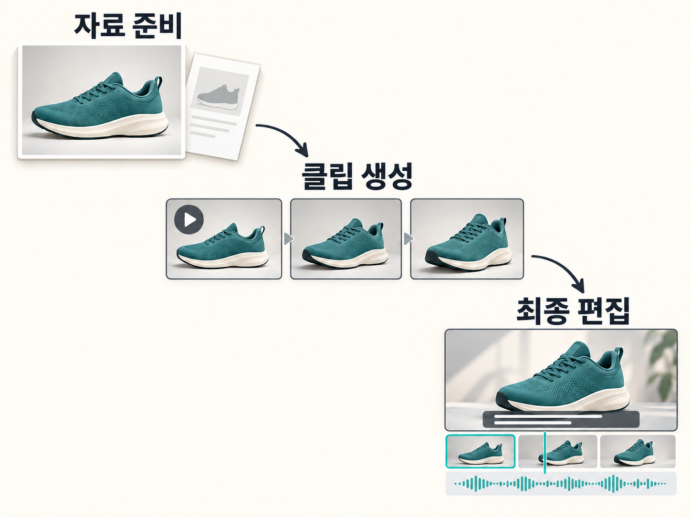

<!doctype html><meta charset="utf-8"><title>Workflow original-raster inspection</title><style>body{margin:0;background:#f3f3f3;font-family:system-ui}section{padding:20px;background:white;margin-bottom:16px}h2{font-size:16px;margin:0 0 12px}img{display:block;height:auto}.native{width:1448px}.mobile{width:320px}</style><section><h2>Untouched raster displayed at 320 CSS px</h2></section><section><h2>Untouched raster at source width 1448 px</h2></section>
